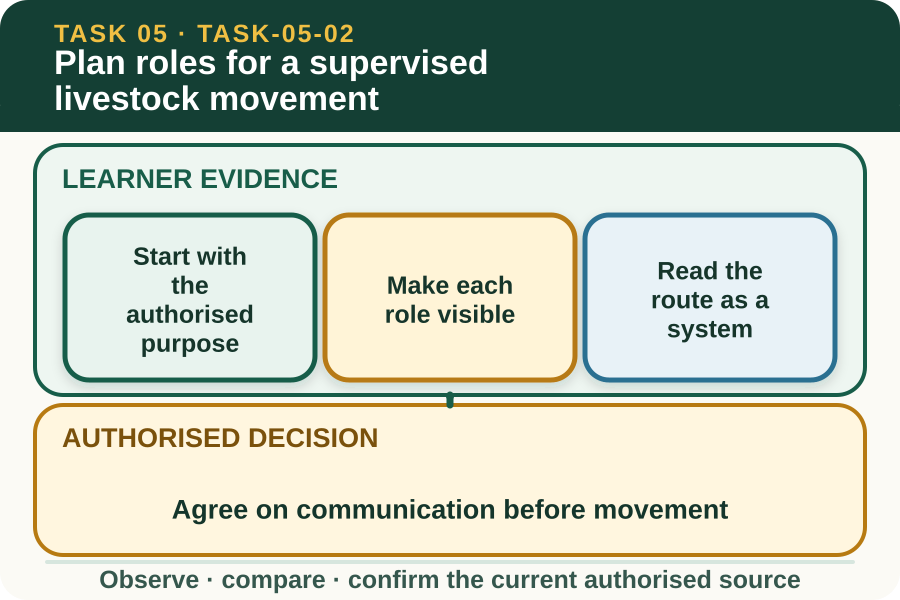

Learning purpose
Clarify purpose, roles, route, facilities, communication and stop conditions before movement.
Task 5 · Lesson 2 of 4
Clarify purpose, roles, route, facilities, communication and stop conditions before movement.
Learning purpose
Clarify purpose, roles, route, facilities, communication and stop conditions before movement.
Success criteria
Learning boundary
Supplementary learning and formative practice only. Current RTO assessment, local procedures and authorised supervision control real work.

A movement plan begins with a clear purpose, identified animals and an approved destination. These facts come from the supervisor and current livestock plan, not from what seems quickest to a learner.
Clarification is necessary when identifiers, numbers, destination or timing do not agree. A learner should repeat key details in their own words so misunderstandings are found before gates, people or animals are positioned.
Every participant needs a defined role, location, communication method and decision limit. A role label such as helper is too vague unless the team knows what information that person watches for and reports.
One authorised person coordinates changes. This prevents several people giving competing signals or independently changing the route, timing or group composition when a condition changes.
Route planning considers the starting point, destination, access points, gates, surfaces, visibility, nearby work and possible environmental implications. It also checks that facilities are ready under the current workplace procedure.
This lesson supports plan literacy only. Whether a particular gate, yard, lane or access point is suitable must be confirmed on site by the authorised person using current local information.
Short, unambiguous communication helps the team share observations without adding noise or contradictory instructions. The exact words, signals and communication devices used are chosen through the workplace's current plan and induction.
A closed-loop message includes the instruction or observation, an acknowledgement and confirmation when required. This makes it easier to detect a missed message before it develops into a welfare or safety problem.
Fictional worked example
Plan context: At fictional Wattle Creek Training Farm, a supervisor briefs three learners to observe the relocation of a numbered group between two designated areas. Plan reading: Priya notices that the written destination says North Holding Area while the whiteboard says East Holding Area. Decision and reason: She does not choose either destination because the inconsistency changes the route and facility plan. Safe action: Priya reads back the two conflicting entries and asks the supervisor to confirm and update the team. Result: The supervisor corrects the board and rechecks roles. Next check or record: Priya notes the confirmed destination and her observation role.
A stop condition is an observable sign that the confirmed plan no longer matches the scene. Examples can include an unexpected obstruction, a missing person, a facility fault, unclear identification or changed livestock behaviour.
The workplace decides the actual stop words and response. A learner's responsibility is to recognise the agreed condition, communicate it promptly and wait for authorised review rather than inventing a workaround.
The plan should say how numbers, destination and work outcomes are confirmed after the task. It should also identify who receives reports about facilities, faults, animal welfare observations and environmental concerns.
A classroom planning record rehearses information flow, not physical handling. It does not replace the supervised practical, enterprise record or assessor-controlled evidence required by the current RTO package.

External media loads only after you choose it.
Source-linked video
Why watch: Identify planning and communication points without copying a handling technique.
Watch for: Which role, route or communication point should be agreed before supervised movement starts?
Formative practice
Each option explains the consequence. These answers save only on this device.
Written application
Apply and keep a learning record
Review a teacher-provided fictional plan and highlight the purpose, identifiers, roles, route, communication, stop conditions and completion check. Mark any conflict as requiring supervisor confirmation rather than fixing it yourself.
Learning record: An annotated supplementary planning brief showing complete fields, conflicts and authority boundaries.
Lesson responses and the activity are formative learning only. Formal sufficiency and competence remain with the current RTO process.
Source basis: AHCLSK224 Release 1 preparation, communication, facility, access-route, tally and reporting requirements, with AHCLSK223 Release 1 clarification and affected-worker communication. Current workplace procedures, approved facilities, livestock plan, teacher demonstration and supervision control actual movement.